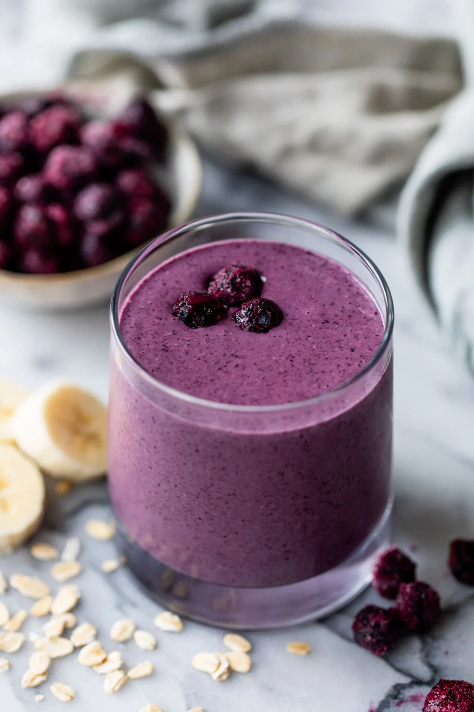

Blueberry Smoothie
Diet: Raw, Diary-Free, Gluten-Free, Vegan
Prep Time: 20 min
Serving Size: 2
Description
This vibrant blueberry smoothie is creamy, fruity, delicious and nutritious!

Ingredients
- 1 cup of blueberries
- 1/2 cup of cherries
- 1/2 of a frozen banana
- 1-2 scoops of l-glutamine
- 1 scoop of protein powder
- 2 tbsp flaxseed
- 2 tbsp sunflower seeds
- 1 tbsp coconut sugar
- 2 tbsp chocolate chips
- 2 cups of oat milk
Steps
- Place all frozen ingredients into your blender
- Place all dry ingredients into the blender, putting the most fine ingredients on top to decrease the chances of these ingredients sticking to the bottom of the blender vessel
- Pour in our liquid ingredient: The oat milk!